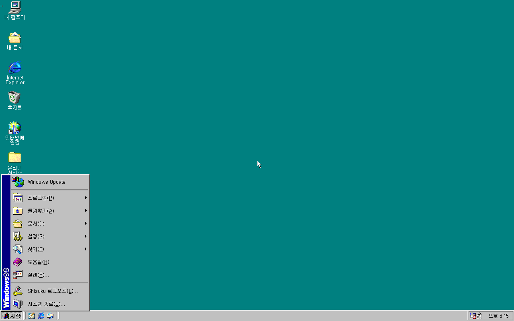
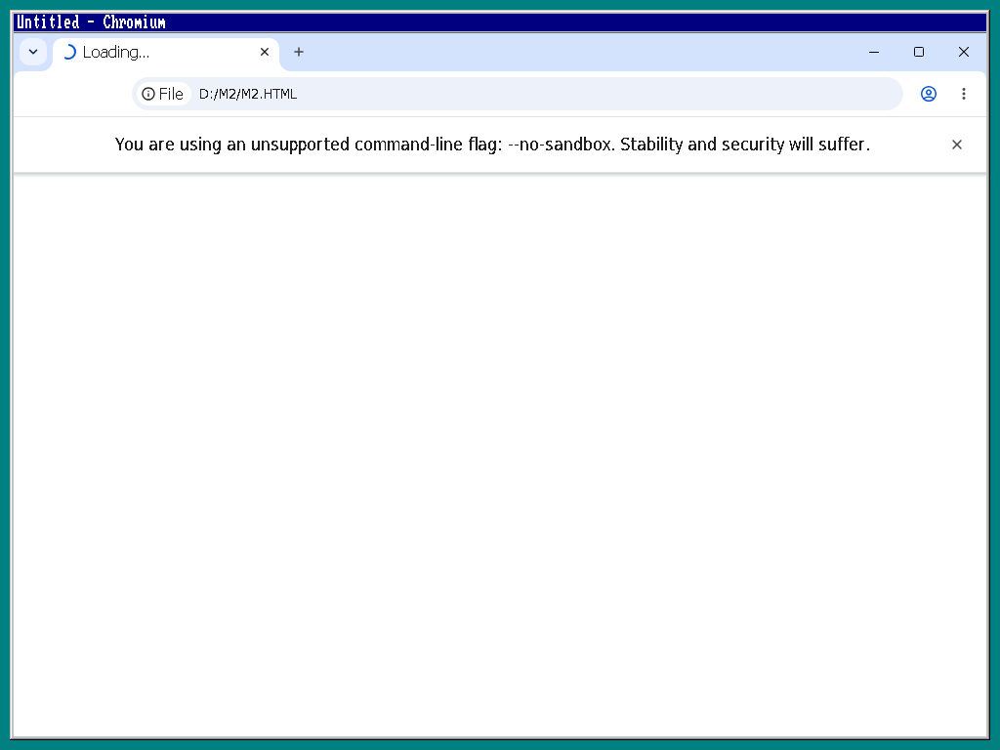

실제 실행 원본 · 크게 보기 ↗
실제 실행 원본 · 크게 보기 ↗
실제 Windows 98 · GOP
Notepad++ 8.9.8.1
저장한 파일을 다시 부팅한 뒤 열고, 다른 내용을 직접 입력해 새 파일로 저장했습니다. 앱의 정상 종료도 확인했습니다.
전용 앱 호환 실행기를 사용한 결과입니다. 새 39바이트 파일의 재부팅 후 열기는 아직 별도 시험하지 않았습니다.
실행 기록 보기 → 직접 입력·저장 원본 →AUTHORSHIP / 개발·검증 기록
ShizukuOS을 개발하며 확인한 화면과 실행 결과입니다. 원본 사진을 그대로 보여 드리고, 각 프로그램이 현재 동작하는 환경을 함께 표시합니다.
2026년 10월 1일 기준 · 소스와 현재 검증 결과를 공개합니다. ShizukuOS 1.0.0은 개발 목표이며 최종판은 아직 출시되지 않았습니다.
실제 실행 원본 · 크게 보기 ↗
저장한 파일을 다시 부팅한 뒤 열고, 다른 내용을 직접 입력해 새 파일로 저장했습니다. 앱의 정상 종료도 확인했습니다.
전용 앱 호환 실행기를 사용한 결과입니다. 새 39바이트 파일의 재부팅 후 열기는 아직 별도 시험하지 않았습니다.
실행 기록 보기 → 직접 입력·저장 원본 →
실제 실행 원본 · 크게 보기 ↗UEFI 부팅 뒤 설치된 Shizuku 기본 그래픽 드라이버로 시작 메뉴와 실제 화면 그리기를 확인했습니다.
1280 × 800 고정 모드의 시험 결과이며, GPU 3D 가속과 모든 하드웨어 지원은 개발 중입니다.
실행 기록 보기 → 그리기 시험 원본 → 실제 실행 원본 · 크게 보기 ↗
실제 실행 원본 · 크게 보기 ↗
원본 Legcord의 Welcome 화면과 Get Started 버튼을 실제 실행 화면에서 확인했습니다.
Windows 98 내부 연결과 Discord 접속은 개발 중입니다. 이 관찰 시험은 제한 시간으로 끝났습니다.
실행 기록 보기 →페이지의 계산 결과를 DOM에서 확인
<p id="m">ShizukuDOS M2 probe 42</p>이 영역은 실행 결과 텍스트입니다. 브라우저 사진이 아닙니다.실제 다중 프로세스 실행으로 페이지의 DOM 결과와 정상 종료를 확인했습니다.
화면 없는 headless 시험입니다. 기록된 이미지 경로는 리비전 1708403을 가리키지만, 당시 결과에는 실행 파일·전체 패키지 해시가 없습니다. 최신 버전의 완전한 출처 검증과 그래픽 브라우저·웹 탐색·Windows 98 내부 실행은 계속 확인 중입니다.
검증 범위와 기록 보기 →
실제 실행 원본 · 기능 시험 미완료 ↗157.0.8079.0 · 리비전 1706750의 주소 표시줄과 도구 모음을 표시했습니다. --no-sandbox로 실제 실행했습니다.
페이지는 Loading 상태였고, 이후 접근 오류로 종료했습니다. 원본 관찰 기록의 1708403 표기를 실제 파일 검증에 따라 정정했습니다. 웹 탐색과 Windows 98 내부 구동은 아직 확인되지 않았습니다.
원본 해시·정정 기록 →Google Chrome·Chromium·Firefox의 실제 웹 탐색, Legcord의 Discord 접속, 최신 오픈소스 Office의 문서 작업, Steam의 실제 기능을 계속 구현합니다. 독립 64비트 실행 결과를 Windows 98 내부의 화면·입력과 연결하는 작업도 진행 중입니다.
SOURCE / 출처와 기여
프로젝트의 작성자와 변경 내역은 공개 저장소에 기록합니다. 프로그램의 원본 화면은 각각 Notepad++, Chromium, Legcord 프로젝트의 실제 배포 프로그램에서 얻었습니다.